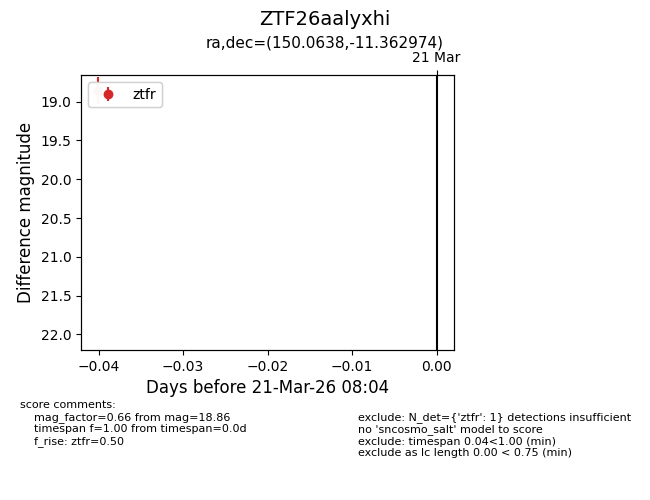
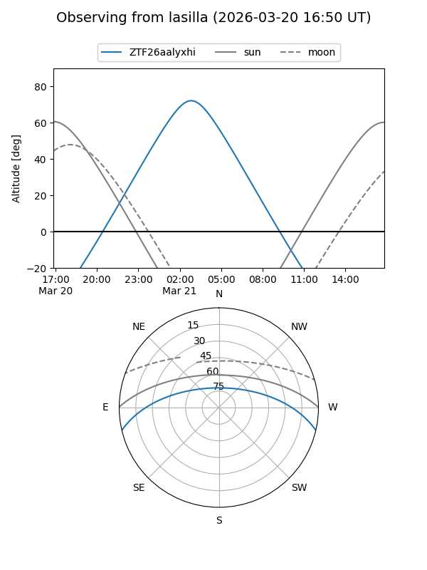
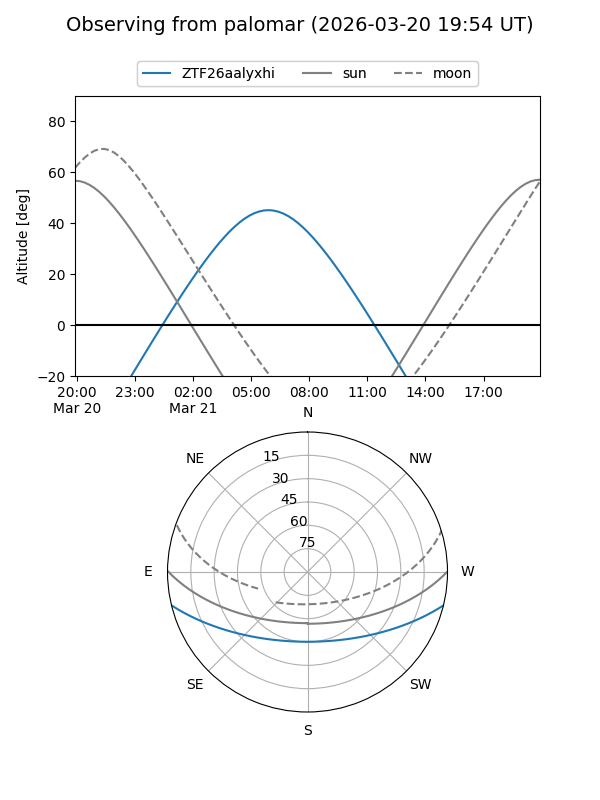

ZTF26aalyxhi
Target ZTF26aalyxhi at 2026-03-21 08:06
Aliases and brokers:
FINK: link
Lasair: link
ALeRCE: link
alt names
ZTF26aalyxhi (ztf,fink_ztf)
Coordinates:
equatorial (ra, dec) = 150.0638,-11.36297
equatorial (HMS+DMS) = 10:00:15.31,-11:21:46.71
galactic (l, b) = (250.0121,+33.39555)
Flags:
Photometry:
last ztfr=18.86
1 ztfr detections
Lightcurve

Visibility


Additional plots